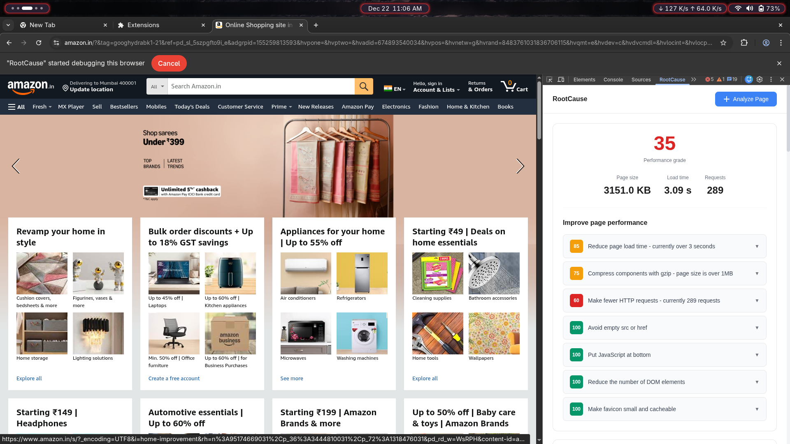

Root-cause narratives
Explains the reason behind performance symptoms, not just “what failed.”
Chrome DevTools extension
RootCause explains why pages are slow in plain English, traces issue dependencies, and ranks fixes by impact so teams ship improvements faster.
What you get
Everything needed to go from slow page to prioritized fixes without switching tools.
Explains the reason behind performance symptoms, not just “what failed.”
Sorts findings into Critical, Optimization, and Micro-Win so work is focused.
Maps issue chains so you can fix upstream causes and unlock multiple gains.
Specific and implementable fix guidance for each detected issue.
Runs directly in the RootCause tab next to standard browser debugging tools.
Manifest V3 setup with a clean project structure for maintainability.
Workflow
Use F12 or right-click → Inspect on the page you want to optimize.
Switch to the custom panel integrated into your DevTools workspace.
Click Analyze Page to capture metrics, dependencies, and bottlenecks.
Work top-down by impact and validate improvements on the next run.
Product view
Real screenshot from the extension UI.

Installation
git clone https://github.com/Yashrajsalunkhe/RootCause-Extension.git
cd ExtenctionOpen chrome://extensions/, enable Developer mode, then click Load unpacked.
Open DevTools and run analysis from the RootCause tab.